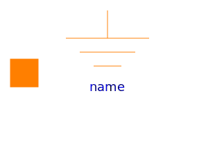
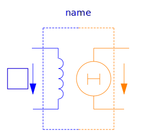
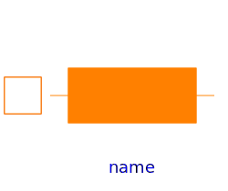
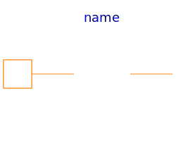

Basic elements of magnetic network models
| Name | Description |
|---|---|
|  Ground | Zero magnetic potential |
|  ElectroMagneticConverter | Ideal electro-magnetic energy conversion |
|
|
Electro-magnetic energy conversion with a leakage inductance |
| Constant reluctance | |
| Constant permeance | |
| Leakage reluctance with respect to the reluctance of a useful flux path (not for dynamic simulation of actuators) | |
|  EddyCurrent | For modelling of eddy current in a conductive magnetic flux tube |
|  Idle | Idle running branch |
| Short | Short cut branch |
| Crossing of two branches |